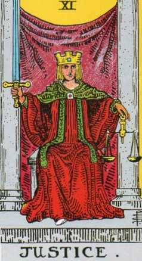
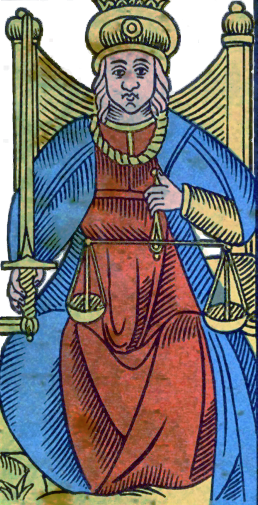
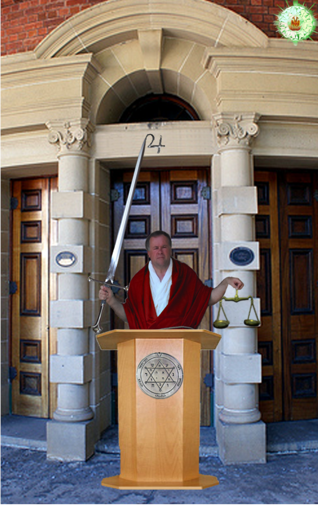
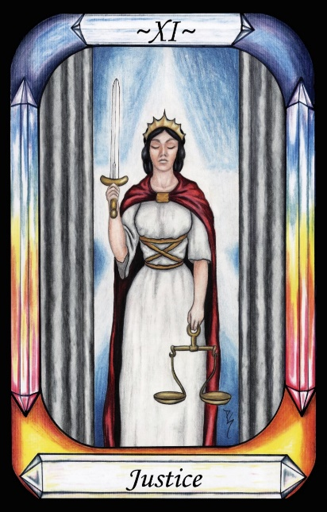
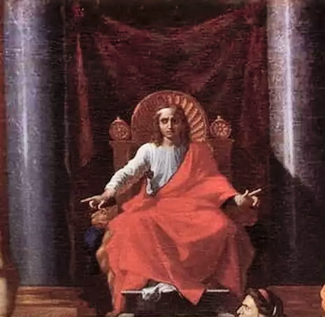
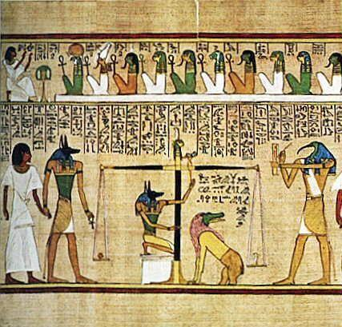

Justice




Representation |
Solomon, representing Jupiter |
Meaning |
Jupiter’s gift to mankind – self rule |
Opposite card |
The Hanged Man, punishment of the greedy thief. |
Function |
Justice is Solomon and Jupiter’s gift of self-rule. It is also Justice from Plato’s Chariot Allegory. Prior to this gift, Saturn was the only arbiter.
[P13] …The Demiurge made the seven planetary Governors from the elements of nature. These seven encompass the entire world that is perceived by the senses, and their rule is called Fate.
RWS Imagery
Solomon shows the usual accoutrements of Justice – Sword and Balance. There are two pillars with a red curtain strung between them. A king wearing a castellated crown and red robes sits in Judgement before the curtain. The scales allow the weighing of the two sides of the issue, and the sword represents the willingness and ability to implement the solution, as per Solomon’s threat to cleave a disputed baby in two, to give half to each claimant.
The sword is probably that used by Solomon to threaten halving the child, and the balance scales hark back to Egypt, and weighing the soul against a feather to judge its purity.
There is artwork by Nicholas Poussin from around 1649 entitled The Judgement of Solomon – see Figure 8 - along with numerous other works by other artists on the same topic. This work shows Solomon wearing a red robe, seated between, and before, two stone pillars. He is also sitting before a red curtain draped between the two pillars. There is even the appearance of a white right foot from under the red robe. It therefore seems highly likely that the Waite-Smith card represents Solomon the King.
One of the known symbols of Jupiter is a Set of Scales - Showing him as a god of Justice and law.

Figure 9 - A portion of The Judgement of Solomon - Poussin 1649
Image courtesy Wikipedia Commons
While Waite’s reference to Solomon is clear, it seems likely that the symbology of the scales is more important to the Pymander theme, in accordance with the concept of weighing the heart of the dead against a feather. This corresponds well with the Pymander notion that the soul must have given up the weight of the seven governors before it will be allowed to ascend to heaven.
This theme is common in many religions, but probably originates in Egypt, with Anubis doing the weighing.

Figure 10 - Anubis weighing of the heart against a feather